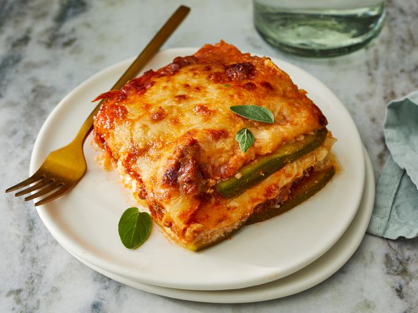

Ultimate Low-Carb Zucchini Lasagna

Keto lasagna made with zucchini slices instead of pasta. This low-carb, gluten-free beef lasagna is delicious and satisfying; it's a crowd-pleaser!
Ingredients
- Cooking spray
- 1 tablespoon olive oil
- 1 pound ground beef
- 2 teaspoons salt, divided
- 1 teaspoon dried oregano
- 1 large egg
- aluminum foil
- 2 cups shredded mozzarella cheese
Steps
-
Preheat the oven to 375 degrees F . Grease an 8-inch baking dish with cooking spray
-
Pat dry zucchini slices with a paper towel to remove excess moisture. Set aside.
-
Heat olive oil in a saucepan over medium-high heat. Add ground beef; cook until browned, 5 to 8 minutes.
-
Add marinara sauce, 1 teaspoon salt, oregano, and pepper; simmer for 10 minutes. Set aside.
-
Combine ricotta cheese, egg, 1 teaspoon salt, and nutmeg in a bowl; mix well. Set aside.
-
Arrange one layer of zucchiini slices in the prepared baking dish. Cover with 1/2 of the sauce. Add another layer of zucchini slices. Spread ricotta mixture on top. Sprinkle with 1/2 of the mozzarella cheese. Add another layer of zucchini slices; cover with remaining sauce and top with remaining sauce and top with remaining mozzarella cheese and Parmesan cheese. Cover the baking dish with aluminum foil.
-
Bake in the preheated oven for 30 minutes. Remove aluminum foil and bake until top is golden, about 15 minutes more.